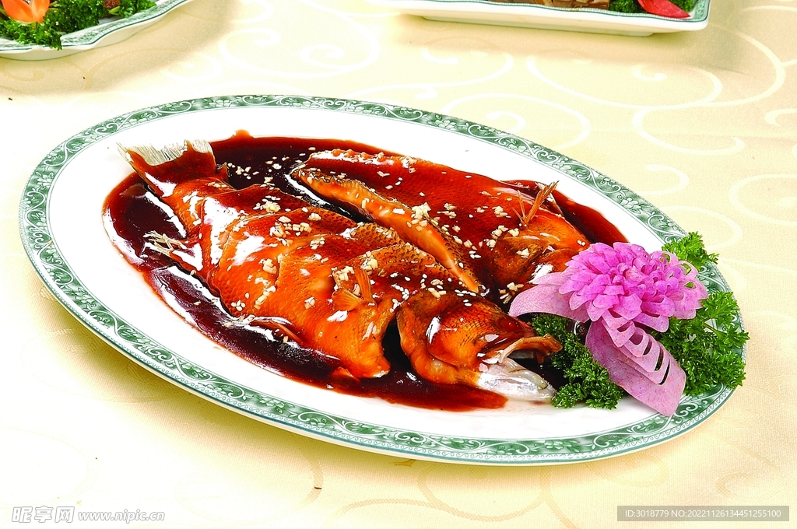
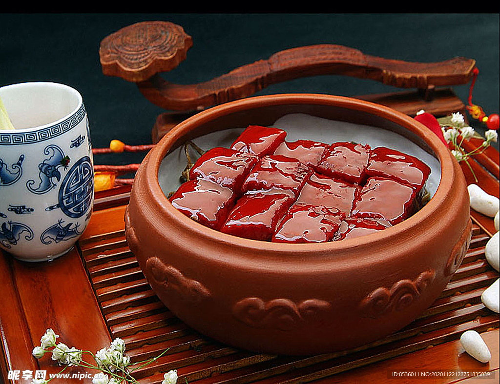

杭州美食
杭州的美食文化同样丰富多彩，其中最著名的莫过于西湖醋鱼、东坡肉和龙井虾仁。这些传统菜肴色香味俱佳，受到很多人的喜爱。

西湖藕粉是浙江省杭州市的一种名优特产；其风味独特，富含营养，旧时是为皇家提供“贡粉”。 藕是荷花在地下的茎， 经特别加工制成的藕粉，呈薄片状，质地细滑，色泽白中透红。服用时只需先用少量冷水调和，再用开水冲调成糊状即可， 冲泡后的藕粉晶莹透明，口味清醇，有生津开胃，养血益气的功效，是极适用于婴孩、老人、病人的滋补品。

东坡肉，又称红烧肉，肥而不腻，入口即化，是杭州的传统名菜之一。

龙井虾仁，将西湖龙井茶与河虾结合，茶香与虾鲜完美融合。